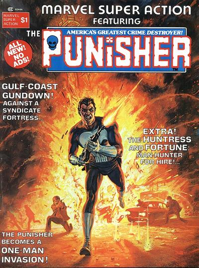
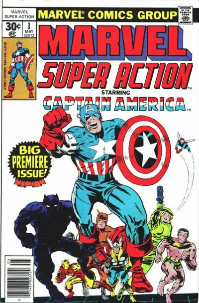

Marvel Super Action

Series: Two completely unrelated titles. A one-shot magazine sized 1976, 37 issue reprints 1977
Publisher: Marvel
1976 series #1:
- Punisher cover by Bob Larkin.
- "Behind the Action" Written by Archie Goodwin and illustrated by Howard Chaykin. A Punisher adventure that includes the Dominic Fortune origin story.
- "Red-Eyed Jack is Wild", script by Mike Friedrich, illustrations by George Evans. The Huntress a.k.a. Bobbi Morse 1st appearance in the Ka-Zar story in Astonishing Tales #6; she later becomes an Agent of S.H.I.E.L.D. (Agent 19), then The Huntress, then Mockingbird (in Marvel Team-Up #95). She has also used the alias Roberta Morse.
- "An Ugly Mirror on Weirdworld", 1st Weirdworld written by Doug Moench and illustrated by Mike Ploog.

1977 series #1: Originally Presented in Captain America (1968 1st Series) #100 - "This Monster Unmasked!" Starring Captain America. Guest-starring Black Panther. Cameos by the Avengers and Sub-Mariner. Written by Stan Lee. Art by Jack Kirby and Syd Shores. After a quick recap of how the Sentinel of Liberty arrived in modern times, Cap, T'Challa and Sharon Carter suddenly find themselves surrounded. Outnumbered and out gunned, our heroes soon learn that they face the sinister World War II criminal Baron Zemo! But that's impossible, Zemo is dead, isn't he? Cover price $0.30.